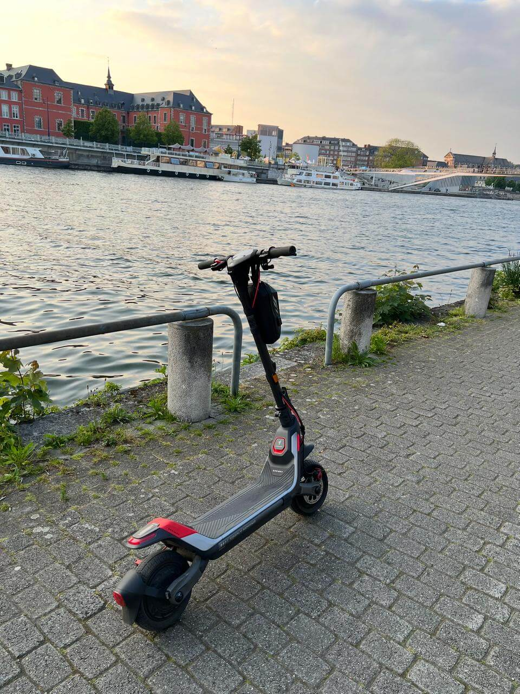

Mon parcours : du vol à la passion
2022 : Le tournant inattendu
Tout a commencé par un vol. On m'a dérobé mon vélo pliant, mon compagnon de trajets quotidiens pour les courses. Contraint de trouver une alternative rapide, j'ai emprunté pour la première fois une trottinette électrique en libre-service. Ce premier contact a été une révélation.
L'agilité, la vitesse, la sensation de glisser dans la ville sans effort m'ont immédiatement séduit. Je savais que je ne rachèterais pas de vélo.
2022-2024 : Les années Segway P100S
Après quelques semaines de réflexion, j'ai investi dans ma première trottinette personnelle : le Segway P100S. Ce modèle m'a accompagné pendant deux années intenses. Fiable, puissant, autonome, il a transformé mes déplacements en plaisir pur.
Avec lui, j'ai parcouru des centaines de kilomètres en ville, découvert des raccourcis insoupçonnés, et surtout, j'ai compris que la trottinette n'était pas qu'un substitue au vélo, mais une passion à part entière.

2024 : L'évolution avec le ZT3 Pro et le Max G3
En 2024, après deux ans de bons et loyaux services, j'ai revendu mon P100S. Ce n'était pas une séparation, mais une évolution. Segway avait sorti deux nouveaux modèles qui m'intriguaient : le ZT3 Pro et le Max G3.
Incapable de choisir entre leurs spécificités complémentaires, j'ai fait le choix radical : les acheter tous les deux. Aujourd'hui, j'alterne selon mes besoins : le ZT3 Pro pour les trajets rapides et sportifs, le Max G3 pour les longues distances en confort.
Le vol de mon vélo pliant, fut finalement le meilleur coup du sort de ma vie de cycliste urbain. Il m'a ouvert les portes d'une nouvelle passion.